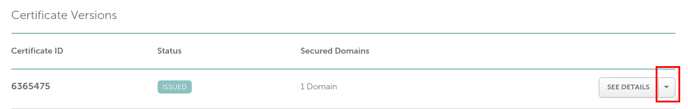
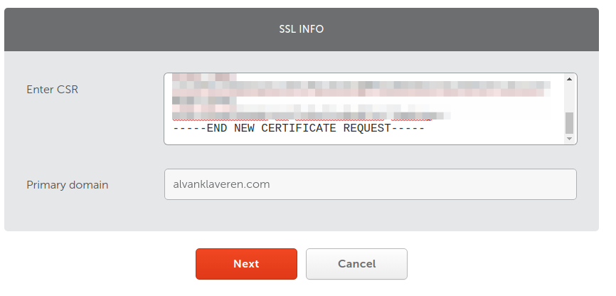
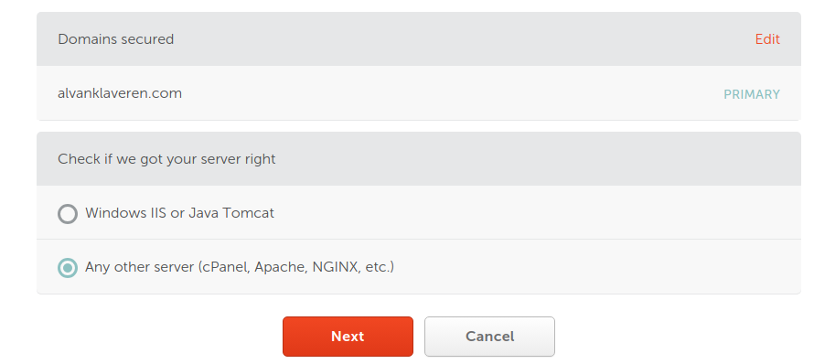
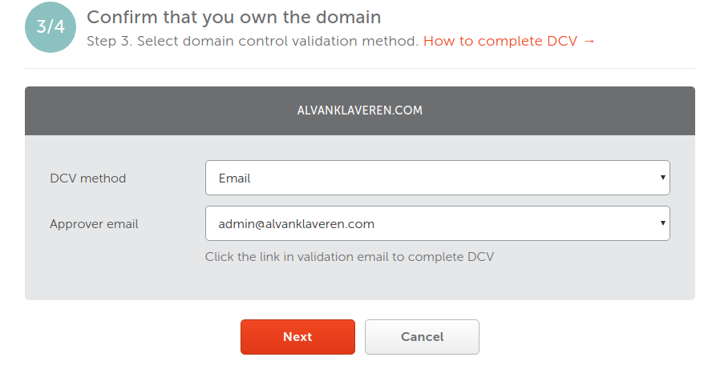

Acquire and install a Certigo SSL certificate through NameCheap
It has been a while since I last used a secured webpage (https). Last time I used a free solution (Let's Encrypt) on an OpenShift environment. This time however, I wanted to quit using free solutions, and bought an SSL certificate through Namecheap from a trusted Certificate Authority called Sectigo (formerly Comodo CA). The certificate I got is a PositiveSSL ticket which costs less than 8 dollar a year, which is a fair price to pay for having a CA that is trusted by most browsers.
Prior to reading the article I expect you to have at least some knowledge of and experience with:
Namecheap
(Apache) Tomcat and Apache (configuration)
the Linux filesystem
Before we start, mind that this tutorial is, for the most part, interchangeable with any other
operating system or (type of) webcontainer (e.g. tomcat), apart from a few details that are (very) specific for the setup of
alvanklaveren.com.
First, we open a linux terminal, go to a folder where we would like to manage our certificates, and create a keystore. This
could be any place you like, but in this example we will use the tomcat configuration folder (tomcat/conf/).
In this folder, run the following commands:
1) keytool -genkey -keysize 2048 -keyalg RSA -alias tomcat -keystore keystore.jks Mind that we use tomcat as an alias for the certificate in the keystore. If you want to use another alias, make sure to replace it in all the further instructions below.
password (default the password is changeit. In this example we do not change it!)
first and last name: yourdomain.com (do not prefix www !)
organizational unit (e.g. It Department)
name of organization
city
province or state
country code (2 character code, like NL, UK, IT, and so on)
Next you can press enter to keep using the same keystore password (changeit), or change it now (and remember... forever !!)
This will now have generated a keystore named "keystore.jks".
2) Immediately make it a pkcs12 keystore, if it is not already.
Make a backup of the keystore, just in case something goes wrong later on:
cp keystore.jks keystore.jks.backup
3) Generate the csr:
So now we have the csr file (tomcat.csr in this example), that we are going to use to get our certificate.
4) Go to namecheap and get (a new) certificate (reissue)
Click on the dropdown arrow and select “reissue”
" style="width:100%; border:1px solid black">Now copy the content of the CSR generated in step 3 into the “Enter CSR” box and press “Next”
" style="width:100%; border:1px solid black">In the next screen, choose “Any other server”, because we are using apache2 on Digital Ocean.
" style="width:100%; border:1px solid black">Next, choose Email as DCV method (by far the easiest), and follow the instructions in the emails to get the certificate and root/intermediate bundle.
" style="width:100%; border:1px solid black">The first (comodo/sectigo) email asks you to enter the validation code at the given link in the email. When you entered the code, a second email arrives containing a zip file. This zipfile contains a bundle and your domain certificate. In my case, these are alvanklaveren_com.crt and alvanklaveren_com.ca-bundle.
The bundle contains both the root and intermediate certificate, so we split this into one root.crt, and one intermediate.crt.
Important: The bundle starts with the intermediate, and ends with the root certificate, in that order.
Next we copy these to the keystore location, together with alvanklaveren_com.crt. We are now going to import them into the keystore.
5) Import certificates (REMEMBER: we made a copy of the keystore in case something goes wrong). First we import the root, then the intermediate, then the domain:
The intermediate file is important, because otherwise (older) Android devices may give an “unsecure website” warning.
A specific detail for alvanklaveren.com is that the wicket webpages need to have the @requireshttps
annotation, and the web.xml has to contain a setup to explain which folders (starting the webroot folder), are exempt from https.
For alvanklaveren.com, all webpages are secure, except for the gameshopmobile page, that contains a service to send data to a mobile
application. It is pointless to make it secure, as it only takes more time to process (and we want our mobile app to be fast).
Below shows the partial web.xml for alvanklaveren.com
<web-app ...>
...
<security-constraint>
<web-resource-collection>
<web-resource-name>server</web-resource-name>
<url-pattern>/*</url-pattern>
</web-resource-collection>
<user-data-constraint>
<transport-guarantee>CONFIDENTIAL</transport-guarantee>
</user-data-constraint>
</security-constraint>
<security-constraint>
<web-resource-collection>
<web-resource-name>server</web-resource-name>
<!-- exclude the call to gameshopmobile. this page is NOT https protected !! -->
<url-pattern>/gameshopmobile/*</url-pattern>
</web-resource-collection>
<user-data-constraint>
<transport-guarantee>NONE</transport-guarantee>
</user-data-constraint>
</security-constraint>
...
</web-app>
Don't forget to restart tomcat: service tomcat restart.
In this document I described how to get SSL certificates and install them. In another document I will explain how to setup apache2 to serve tomcat over 443 using virtual hosts (in ssl-default.conf, apache2.conf).